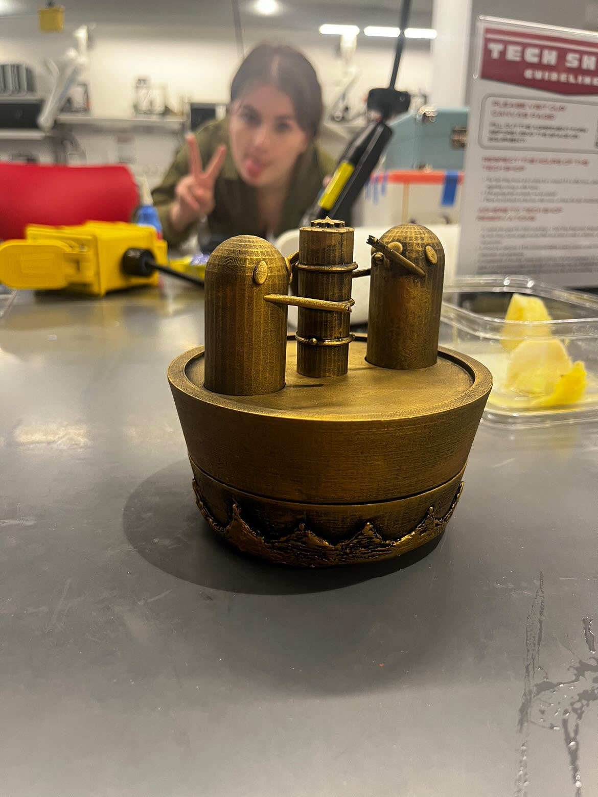
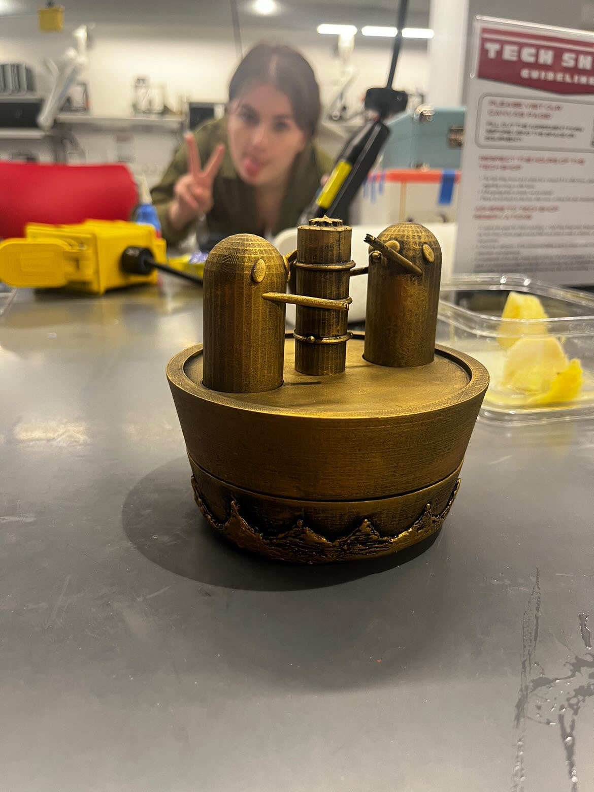

Hello!
My name is Daisy Fernandez-Reyes. I’m a first-gen So-Cal based artist and programmer, currently working as a UX researcher at
Chapman University.
I'm a full time student at Chapman University'25 where im finishing up my B.S. in Software Engineering and a Minor in
Peace and Justice Studies. I'm a self-proclaimed creative technologist and aspiring designer, researcher, and front-end
developer.I doodle to code and code when I'm doodling, and I’m always looking to learn more means of expression and more paths
towards creative solutions.
How I Got Here
August 2021
First Gen in STEM
Started my CS journey at Chapman University! (paws up) I got my first laptop ever and started taking Computer Science classes for the first time ever!. It was a little daunting, as I came from an art background and had next to ZERO experience with computers and programming!

Jan 2022
Daisy The Game Developer
After learning some basic languages and taking a Unity class, I added a Game Development minor and found my niche making assets and animated game sprites and artwork. My best friend Sarah Yoon'25 and I event submitted a project for our first hackathon, Treehacks'23 where we worked to develop an educational game! We didnt win, but we did have a ton of fun! I worked on the art and UI, while sarah created the backend and most game functionality.


October 2022
Daisy The Project Manager
I realized I'm not half bad at managing teams and worked with my peers to get research and passion projects going! My research partner, Ellie Nguyen'25 and I did so well we were even able to get funding and present our work internationally, as well as publish our findings and proposal. Aside from my research work, I also worked with my peers and students in the community to give back and make lasting change through the founding of our schools chapter of the Society of Women Engineers and empowering the community to volunteer work with the Boys & Girls Club and with the the Promising Futures Program!


October 2023
Daisy The Researcher
I started developing my own programming projects and experimenting with different languages and frameworks in order to broaden my skillset! On top of that I worked with my peers to pave the way for other women in engineering! My friends and I were even recognized for it in this article!


 

January 2024
Daisy The Designer
After broadening my skillset, I realized I could add more of a creative pop to things. I reflected on what made me happy as both a programmer and designer. I've since worked on finding my niche and have created my own space in the World Wide Web through self-guided learning projects, like my first website ever, and through projects like this portfolio, and soon in the publication of my Capstone Project.

2025
Daisy The Creative Technologist
I’m a chronic doodler. On my notes, homework, papers, and even pants. Always the creative, I surprised everyone with a degree in Software Engineering (myself included). I thought I was stuck in tech world forever, but quickly realized I’d never left my roots in art! Im excited for the future and looking forward to the adventures my career has to offer!